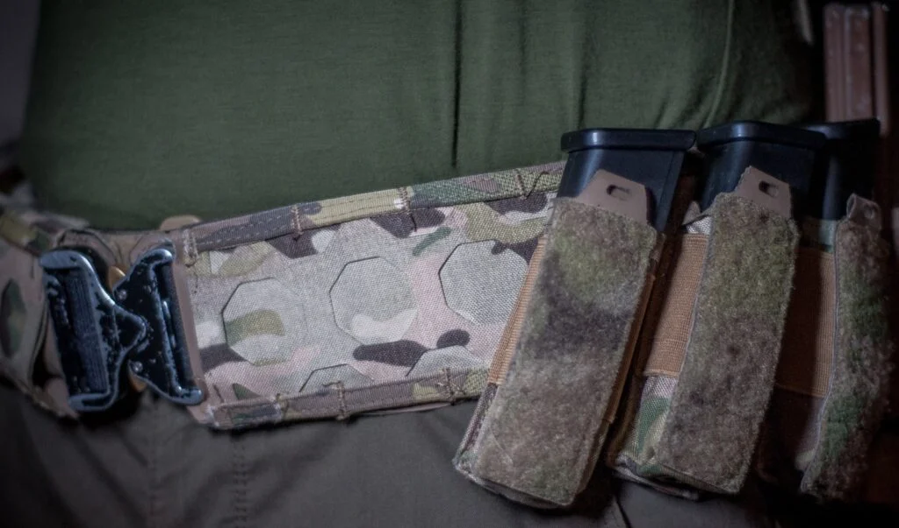

Patented system / Angled mounting
Octamolle — montaż ładownic
pod kątem bez przejściówek
Octamolle to opatentowany system montażu zaprojektowany z myślą o konfiguracji pasa taktycznego. Działa podobnie do znanych systemów modułowych, ale pozwala montować ładownice pod kątem bez dodatkowych adapterów i przejściówek.
01 / Problem
Kompromisy klasycznej konfiguracji
Klasyczna konfiguracja oporządzenia często wymaga kompromisów. Ładownica siedzi prosto, dostęp nie zawsze jest naturalny, a ustawienie pod kątem wymaga dodatkowych elementów. Adaptery potrafią też zabierać cenne sekcje montażowe.
02 / Rozwiązanie
Kąt wbudowany w system
Octamolle pozwala ustawić ładownice pod kątem bez dokładania kolejnych przejściówek. Dzięki temu użytkownik może lepiej dopasować pas do swojej pozycji, techniki dobycia i preferowanej konfiguracji.
System / Octamolle
Jeden system. Więcej kątów konfiguracji.
Ośmiokątne gniazdo to nie ozdoba — to geometria montażu. Każda krawędź oktagonu wyznacza możliwy kierunek przeplotu taśmy ładownicy.
- 01
Ustaw ładownicę prosto
Klasyczny przeplot w pionie — jak w każdym systemie MOLLE/PALS.
- 02
Ustaw ładownicę pod kątem
Przeplot po osi ukośnej gniazda — kąt bez pośredniej warstwy.
- 03
Dopasuj konfigurację do ręki dominującej
Lustrzane osie po obu stronach gniazda — setup dla prawo- i leworęcznych.
- 04
Dopasuj układ do pasa
Gniazda w rozstawie zgodnym z PALS — układ przenosisz między produktami.
- 05
Bez dodatkowych adapterów
Mniej elementów, niższy profil, sztywniejsze mocowanie.
Korzyści
Co daje Octamolle w praktyce
Montaż pod kątem
Ładownica ustawiona pod dobycie, nie pod ograniczenia taśmy.
Mniej dodatkowych elementów
Prostszy setup, mniej punktów, które mogą się poluzować.
Większa swoboda konfiguracji
Osiem kierunków montażu w każdym gnieździe panelu.
Lepsze wykorzystanie miejsca
Sekcje zostają na sprzęt, nie na przejściówki.
Porównanie
Standard MOLLE + adaptery vs Octamolle
Standard MOLLE + adaptery
Rozwiązanie rynkoweOctamolle
GFT SynergyW artykule MILMAG wskazano przykład, że trzy adaptery na magazynki pistoletowe zajmowały sześć sekcji MOLLE, a w systemie OCTAMOLLE na tej samej powierzchni można zamontować trzy ładownice pistoletowe pod kątem i dodatkowo ładownicę karabinową, zużywając pięć sekcji.

Zbliżenie / montaż pod kątem — bez adaptera
Prosto vs pod kątem
Ten sam przeplot. Inny kierunek.
Taśmę ładownicy przeplatasz dokładnie tak samo jak w klasycznym MOLLE — różnica polega na tym, którą oś gniazda wybierzesz. Pion daje układ znany z każdego pasa. Oś ukośna ustawia magazynek pod naturalny ruch ręki przy dobyciu.
- Przeplot pionowy
- konfiguracja klasyczna, pełna zgodność z MOLLE/PALS
- Przeplot ukośny
- kąt 45° bez adaptera i bez utraty sekcji
- Zmiana układu
- przepleć taśmę ponownie — bez narzędzi
Nie tylko MOLLE. Octamolle.